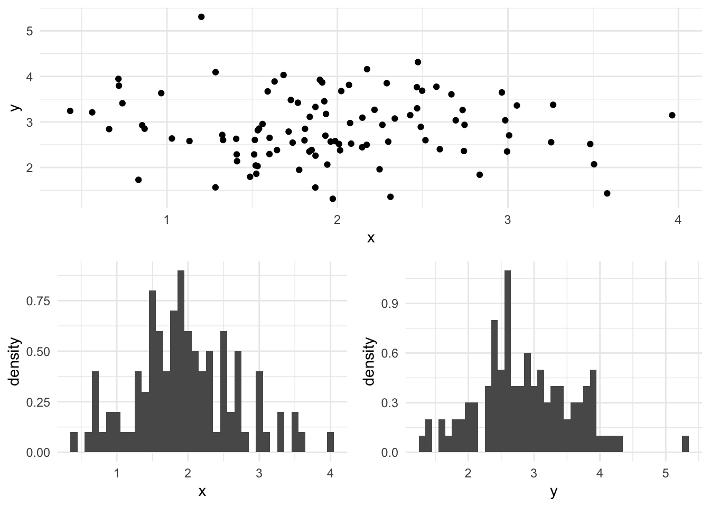
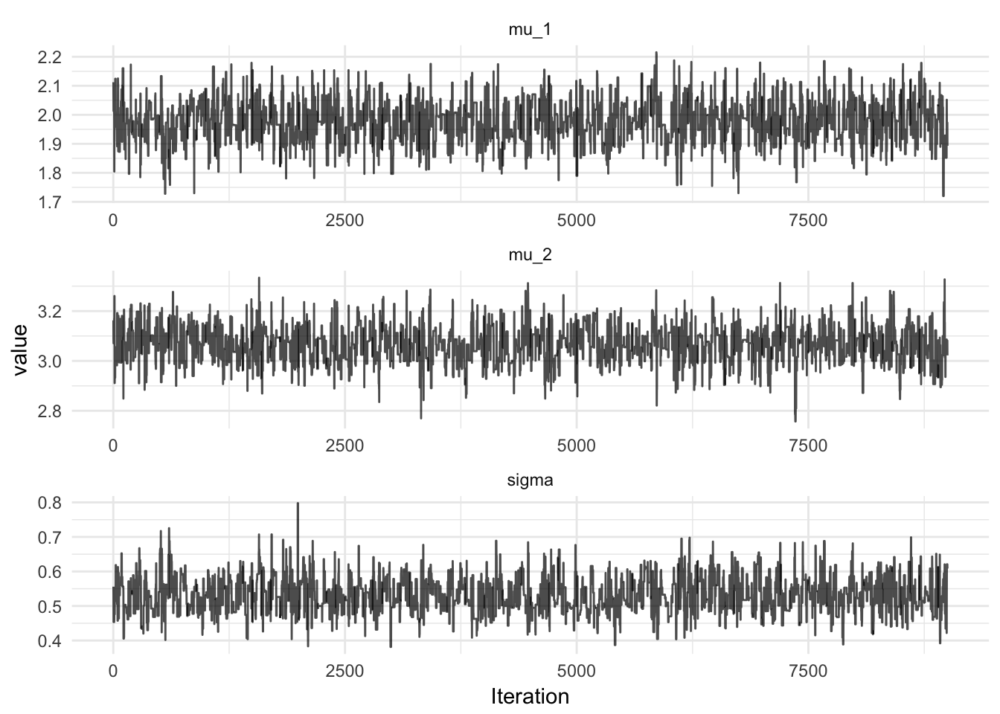

Bivariate Gaussian Model
Scala Breeze is a numerical computing library, which also provides facilities for statistical computing. For instance, implementations of distributions and Markov Chain Monte Carlo for, typically used for Bayesian inference of intractable models. Today I am going to build a simple bivariate Gaussian model, simulate some realisations from the model and use the Breeze library to recover the mean of the bivariate Gaussian distribution and the variance.
The model is given by:
\[ \begin{pmatrix}X_1 \\ X_2\end{pmatrix} \sim \textrm{MVN} \begin{pmatrix} \begin{pmatrix}\mu_1 \\ \mu_2 \end{pmatrix}, \begin{pmatrix} \sigma & 0 \\ 0 & \sigma \end{pmatrix} \end{pmatrix} \]
The model has three parameters, the mean of each variable and the variance which is shared. \(X_1\) and \(X_2\) are independent and hence can be simulated from separate univariate Gaussian distributions:
import breeze.stats.distributions._
import breeze.linalg._
case class Parameters(mu: DenseVector[Double], sigma: Double)
def model(params: Parameters) =
MultivariateGaussian(params.mu, diag(DenseVector.fill(2)(params.sigma)))A simulation from the bivariate Gaussian model is plotted below, the mean for x is 2.0, the mean for y is 3.0 and the variance for each dimension is 0.5.
val p = Parameters(DenseVector(2.0, 3.0), 0.5)
val data = model(p).sample(100)
It is simple to write a function to calculate the log-likelihood of this model:
def likelihood(points: Seq[DenseVector[Double]])(p: Parameters) =
points.map { point =>
MultivariateGaussian(p.mu, diag(DenseVector.fill(2)(p.sigma))).logPdf(point)
}.reduce((x, y) => x + y)We take a sequence of observations, called points, since we know each point is simulated independently from the same distribution, then we simple map over the sequence of points the likelihood using the supplied value of the Parameters. The reduce operation then applies a pairwise function to each element of the list, in this case addition to get the value of the log-likelihood.
For a full Bayesian Inference, we must specify a prior distribution on the parameters, let’s choose a Multivariate Gaussian Distribution on the mean and a Gaussian distribution on the precision (the inverse of the variance). The Gamma distribution in Breeze is parameterised in terms of shape and scale, the mean of the Gamma distribution with shape 1/2 and scale 2 is \(1 = 1/\sigma\):
def prior(p: Parameters) = {
MultivariateGaussian(DenseVector(2.0, 3.0), diag(DenseVector.fill(2)(3.0))).logPdf(p.mu) +
Gamma(shape = 0.5, scale = 2.0).logPdf(1/p.sigma)
}The likelihood and the prior must be combined in order to determine the posterior:
\[ p(\theta | x) \propto p(x | \theta) p(\theta) \]
def logMeasure = (p: Parameters) => likelihood(data)(p) + prior(p)The MCMC method we will be using is the Metropolis-Hastings algorithm with a symmetric random walk proposal. First, we propose a new value of the parameters, \(\theta^*\) from the parameter proposal distribution, then we accept them with probability \(\min(1, A)\), where \(A\) is:
\[A = \frac{p(x|\theta^*)p(\theta^*)}{p(x|\theta)p(\theta)}\]
So if the likelihood multiplied by the prior is larger at the proposed value of the parameters than the previous value, we always accept, otherwise, we may reject. In this way, we can explore the parameter space. In a well tuned sampler, the algorithm will not accept every proposed value of the parameters, otherwise we are NOT exploring the whole of the parameter posterior, just areas of high posterior density. In this case we can increase the variance of the proposal distribution to get the acceptance rate down to approximately 30-40%. The proposal function is:
import breeze.numerics.exp
def propose(scale: Double)(p: Parameters) =
for {
innov <- MultivariateGaussian(DenseVector.fill(3)(0.0), diag(DenseVector.fill(3)(scale)))
mu = p.mu + innov(0 to 1)
sigma = p.sigma * exp(innov(2))
} yield Parameters(mu, sigma)Here, the value of sigma is proposed on the log-scale, since sigma is expected to be positive. Now, we have all we need to build the sampler using breeze:
MarkovChain.metropolis(p, propose(0.05))(logMeasure)
The full code required to run the MCMC in Breeze can be found in this gist. Note that Breeze is a required dependency.
Share this post